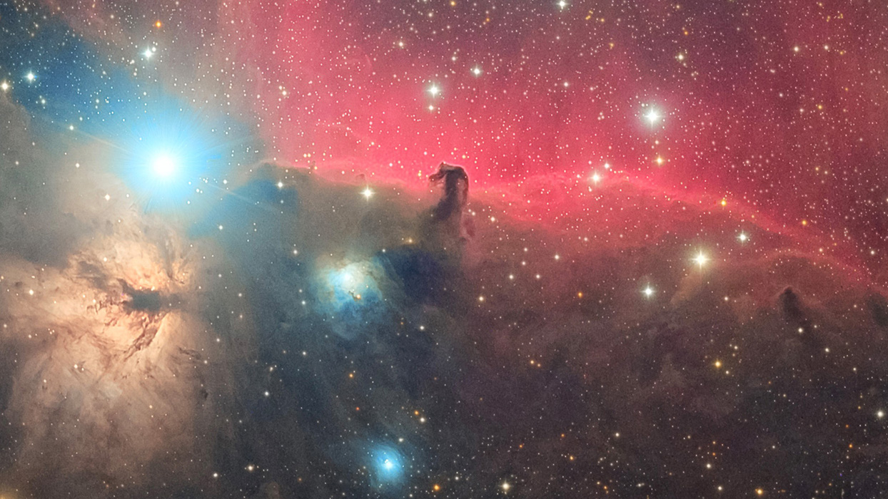
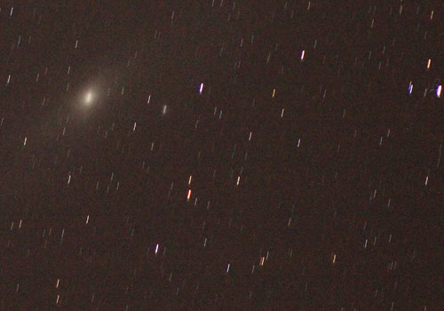
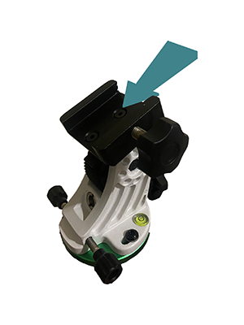
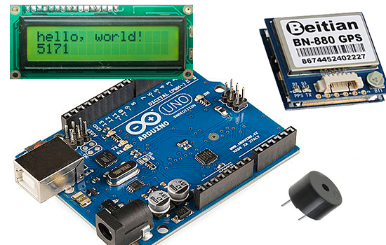

Project Idea
Device to assist in Polar Alignment of an equatorial camera mount.
This project idea is designed to assist in polar alignment for an equatorial camera mount. Polar alignment is an absolute must step when shooting astrophotography, if the mount isn't lined up correctly when shooting long exposure photos you will get what's called “star trails”(see photo to the right). And while it's not an over complicated task by any means it can be a tedious exercise every time you want to take some photos. While there are several self-aligning mounts on the market those products are incredibly expensive, coming in at $2000 on the cheaper end putting them a little out of reach for your everyday astro nerd. This project will attempt to leverage Arduino technology mounted to the camera mount displaying the information needed for polar alignment.
My motivation for this project is admittedly a bit of a selfish one, as mentioned above polar aligning the mount is a pain. For those unable to afford an expensive self-aligning mount, the current best method involves trying to hold your phone flush against the mount with a compass app open while making adjustments with the other hand. This project would yield such an amazing quality of life improvement for me, and based on all the instructional videos I watched when getting started I think it's something that hobbyist astrophotography geeks everywhere would appreciate.
To polar align the mount you only need two pieces of information, know your latitude and your heading. To achieve this the device will you use a GPS module attached to an Arduino Uno board to return the users coordinates, although you only need to know latitude to adjust the elevation of the mount both would be needed for a later step in development. For the compass, the device will use a magnetometer module. For this to function optimally you need to know your magnetic declination, (the amount of variation between the magnetic pole and true north). This information can be found at https://www.magnetic-declination.com/.
Ultimately I would like to incorporate a WIFI module onto the board and have the device connect to the internet and pull users magnetic declination automatically, adjusting the numbers in the programs code on start up. This however is a quite a bit outside my area of expertise, so for now the added accuracy by entering in your magnetic declination will remain a manual task. Checking the declination of the location you will be shooting from via the above website and amending the code accordingly beforehand, of course if shooting from the same location (e.g. a backyard) this is only a one time step. You have to travel for a good while before a change in declination would be required.
Next is has to be mounted to the cameras equatorial mount. This is going to be a custom 3D printed enclosure housing the components, allowing the base of the enclosure to be able to slide directly into the mounts motor rails. The flexibility of 3D printing will also mean being able to have different base options for different brands of equatorial mounts. Set into the top of this housing will be a screen displaying users coordinates and magnetic heading.
To aid in aligning the mount with as little confusion as possible, in addition to the screen displaying the users heading the device will use a beep in conjunction with current heading. With the intervals of the beep increasing and decreasing the closer or further away respectively the user is from south, ending with a continuous beep when south is achieved. Using both visual and audio data representation will make this device completely hands free and super easy to use, and as I will touch on below being able to hot swap this device into the mount will make doing a slight location changes quick enough to be actually worth considering.
There is brainstorming happening on an alternate housing design and mounting method allowing the device to be installed as a permanent fixture, potentially bolted between the tripod and the equatorial mounts base plate. This would take the design from a 1-piece housing to a more segmented design with the bulk of the device needing to be mounted to the tripods legs so as to not interfere with the cameras rotation during shooting. This is the eventual goal for this project, along with the use of a WIFI function as mentioned above. This product would be a must any amateur astro photography enthusiast.
The software being used for this project is the Arduino IDE associated with the board available for free download at https://www.arduino.cc/en/software. Also on the site over at the documentation tab are hundreds of tutorials and documentation required to gain the necessary skills needed for programming the board. In addition to the Arduino Uno board itself the device will use a BN-880 GPS module with built-in HMC5883L magnetometer, giving visual and audio through use of a basic 16x2 LCD display and Buzzer. With the potential addition of a ESP8266 WIFI module or similar in later development. All of these components are readily available from countless online retailers at relatively low cost, and thanks to an active Arduino community and official documentation there are guides and templates out there for all of these modules. Lastly is the 3D printed enclosure which will require the most design work as well as needing some knowledge of a 3D design software such as AutoCAD. The printing itself can easily be out sourced to a number of companies that will take your design and produce anything from single units to thousands, at again relatively low cost.
If this project is successful it will mean having a reliable, consistent and efficient way to get setup for a night of astrophotography. Not only will it make setup orders of magnitude easier, but to be able to quickly and easily do checks throughout the session if you happen to bump the tripod or decide to move the whole setup slightly for a better line of sight. I would like to think that with the all of the incredible things happening in the space industry such as the recently deployed James Web Space Telescope to name only one, and the fact that these events are getting tonnes of media attention gives me hope that more folks will be inspired to go out and capture a piece of this vast and possibly infinite universe we live in. It would be my hope that this device could make getting started with astrophotography a slightly less daunting and more enjoyable experience, taking the most of the guess work out of the alignment process. While preserving some sanity for when you have to learn the editing process.
Next Page